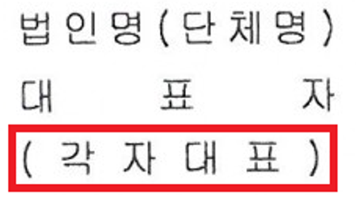
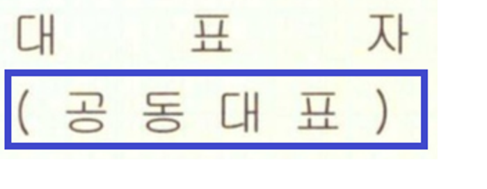

비즈니스를 하는 고객들의 3가지 기본 유형과 특징 이해하기
멤버사를 응대하다 보면 다양한 유형의 계약 명의를 접하게 됩니다. 계약 명의자와 실제 사용자, 돈을 주고 받는 영수증(세금계산서)의 이름이 완전히 같아야 정상적인 계약입니다.
| 구분 항목 | 개인 | 개인사업자 | 법인 |
|---|---|---|---|
| 개념 | 법적인 권리와 권한을 가진 일반적인 '사람(자연인)' | 세무서에 신청해서 사업자 번호를 받은 '개인' (사업자와 내가 한 몸) |
법에 의해서 사람처럼 행동할 수 있는 자격을 부여받은 '새로운 회사 주체' |
| 설립 절차 | 출생 | 세무서에 사업자 등록 (무료, 약 1~3일 소요) |
대법원 등기소에 설립 등기 후, 세무서에 사업자 등록(절차 복잡, 비용 발생) |
| 책임 범위 | 본인의 행위에 대해 무한 책임 | 사업상 발생한 모든 부채와 리스크에 대해 대표자가 무한 책임 | 주주들은 자기가 낸 자본금(투자금) 한도 내에서만 책임을 지는 유한 책임 |
| 과세 방식 | 사업용 증빙을 발행하지 않으며 일상 소득세 적용 | 종합소득세(6%~45%, 개인 소득에 합산) 매출이 커질수록 내야 하는 세금 비율이 급격하게 늘어남 |
법인세(9%~24%, 개인 소득과 분리) 매출이 클때는 최고 세율이 개인사업자보다 낮아서 유리함. |
| SF 고유식별번호 | 주민등록번호 | 사업자등록번호 | 법인등록번호 |
사업 규모가 커진 개인사업자 대표님들이 법인으로 전환을 고민하는 데는 다음과 같은 이유가 있습니다. 멤버사가 왜 굳이 복잡하게 법인을 만드나 궁금할 때 아래 맥락을 기억해 두면 전문가처럼 대응할 수 있습니다.
글로벌 기업 및 특수 단체의 한국 진출 형태와 계약 주체 파악하기
한국에 본사를 둔 기업 외에도, 해외에 본사를 두고 한국 지사를 내거나 비영리 목적으로 패파를 찾는 고객들이 있습니다. 이들은 각각 발급받는 증빙서류의 명칭과 세무 처리가 완전히 다르므로 아래 표를 통해 숙지해두면 좋습니다.
| 구분 | 외국법인 (본점 직접) |
한국지점 (영업소) |
연락사무소 (대표사무소) |
국내 비영리단체 |
|---|---|---|---|---|
| 개념 | 해외 본사가 지점 없이 직접 계약 | 외국 법인이 국내 영업(수익 창출) 위해 설치, 등기 필수 | 비영업 기능(시장조사·연락·홍보 등)만 수행, 실질적 매출 없음 | 비영리 목적 단체(사단법인·협회·조합 등). 법인격 있는 경우와 없는 경우(임의단체)로 나뉨 |
| 계약 명의 | 해외 본점 명의 + 본사 대표(위임자) 서명 | "○○○ 한국지점" + 국내 지점대표 서명 | "○○○ 연락사무소", 실질적 법적 계약 당사자는 본점(외국법인) | 법인명의+대표자 날인 / 임의단체는 대표자 개인명의 |
| 책임 범위 | 법인 책임(칙적 유한책임). 국내에서 채권 회수·강제집행 어려울 수 있음 | 법인격은 외국 본점에 있지만, 국내 영업활동으로 발생한 채무는 국내 지점 재산 기준으로 이행 | 독립된 법적 주체가 아니므로 본점(외국법인)이 전적으로 책임 | 법인=유한책임 / 임의단체=개인 책임 소지 |
| 사업자등록 | 등록 대상이 아님 | 필수 | 불필요. 증빙을 위해 세무서에서 고유번호증 발급받는 경우 있음 | 고유번호증 발급. 수익사업 병행 시 그 부분에 한해 사업자등록 |
| 과세·증빙 | 원천징수 위주, 전자세금계산서는 수기 계산서나 Invoice로 대체 | 법인세 신고 의무 있음, 세금계산서 가능 | 법인세 신고 의무 없으므로 매출세금계산서 불가. 고유번호증으로 매입세금계산서 가능 | 고유목적 비과세 / 수익사업만 과세+세금계산서 가능 |
| 고유식별번호 | 없음 (본국 법인등록번호로 대조) SF에는 999999-9999999로 등록 |
법인등록번호 | 고유번호 | 고유번호 (수익사업 시 사업자번호 병행) |
비영리법인의 본질은 '돈을 벌면 안 된다'가 아니라, '사업으로 번 이익금을 주주나 임원에게 개인적으로 나누어주지(배당하지) 않는다'는 뜻입니다. 따라서 단체의 고유 공익 목적인 소외계층 지원이나 연구비 마련 등을 위해 인형/에코백 같은 굿즈를 유료로 판매하거나 수강료를 받는 수익 사업을 얼마든지 병행할 수 있습니다.
이처럼 수익 사업을 개시하는 비영리단체는 기존에 쓰던 세무서 신분증인 '고유번호증'을 반납하고, '수익사업용 사업자등록증'으로 전환 발급받아 세금을 신고하게 됩니다.
외국에 본사를 둔 기업인데 한국에 아직 상주하는 직원이 없어서 본사와 직접 계약 절차를 밟아야 하는 특수한 경우가 있습니다. 이때는 아래 원칙을 반드시 준수하여 서류의 법적 효력을 확보해야 합니다.
개인사업자가 사업을 시작하기 위해 밟는 행정 단계
입주사가 사업자등록을 진행할 때 패스트파이브에 가장 많이 요청하는 것이 사업장 소재지를 증빙할 서류예요. 멤버사 입장에서 사업자 등록 흐름을 알아봅니다.
| 준비 서류 | 평균 소요 기간 | 행정 비용 |
|---|---|---|
패파 제공 서류 (사업장 소재지 증빙)
|
신청 당일 ~ 최대 3일 이내 | 0원 (무료) 세무서에 신청할 때 발생하는 국가 행정 수수료는 없습니다. |
새로운 법인 인격을 법원 등기소에 등록하기 위한 전체 과정
| 준비 서류(영리법인 기준) | 평균 소요 기간 | 행정 비용 |
|---|---|---|
|
1단계: 법인 설립 등기
등기소 제출
|
약 3~5 영업일 소요 (법원 등기소 심사 기간 기준) |
1. 국가 세금/수수료 (필수): - 등록면허세: 자본금의 0.4% 기본 부과 (서울/수도권 등 과밀억제권역에 설립하면 3배 중과세 적용, 최저 112,500원 이상) - 지방교육세: 등록면허세의 20% 부과 - 등기 수수료: 서류 약 30,000원 / 전자 약 15,000원 2. 대행 수수료 (선택): - 법무사 등 대행 업체 이용 시 약 30~50만 원 선 별도 발생 |
|
2단계: 법인 사업자등록
세무서 제출
패파 제공 서류 (사업장 소재지 증빙)
|
신청 당일 ~ 최대 3일 이내 (세무서 담당 사업자 교부 기간 기준) |
0원 (무료) 세무서에 신청할 때 발생하는 국가 행정 수수료는 없습니다. |
공유오피스 주소를 사용할 때 지켜야 할 약속과 중요성
| ① 주소지 등록 기준 | ② 등록의 필요성 | ③ 행정 처리 절차 | ④ 소요 비용 |
|---|---|---|---|
|
이름이 같아야 합니다: 패파 계약서에 적힌 계약자 이름(또는 법인명)과 세무서에 등록할 사업자 이름이 완벽하게 일치해야 합니다. 계약이 끝나는 순간 주소 사용 권리도 사라집니다. |
우편물 수령의 기준: 국세청 세금 고지서나 법원 공문 등 관공서 공식 우편물을 안전하게 받는 기준지가 됩니다. 주소가 제대로 등록되어 있어야 정상적인 영업과 계산서 발행이 가능합니다. |
체크리스트 운영: 입주할 때: 패파와 계약 완료 ▶ 사업자 주소 신규 등록 혹은 주소 변경 퇴주할 때: 멤버십 종료 후 14일 이내 반드시 다른 곳으로 주소지 변경 또는 폐업 신고 후 증빙 제출 |
변경 형태별 상이: - 개인사업자 주소 변경: 전국 세무서 무료 처리 - 법인 주소 이전: 법원 등기 절차가 동반되어 등록면허세 및 등기 수시료가 최소 수만 원에서 수십만 원까지 발생합니다 |
계약이 끝나서 나간 멤버사가 주소를 패파 지점으로 그대로 놔두면, 전 회사의 세금 독촉장 같은 무거운 행정 우편물이 계속 지점으로 배달되어 지점 운영에 큰 방해가 됩니다. 더 큰 문제는 그 방에 새로 들어온 신규 입주사가 '기존 유령 회사 주소 중복' 문제로 인해 자기 사업자등록증을 발급받지 못하는 상황이 생깁니다. 퇴주 정산 처리를 할 때 반드시 주소를 옮겼다는 확인서(신청 화면 캡처 등)를 받아주세요!
앞서 배운 개념을 실제 계약 처리 실무에 어떻게 적용하는지 확인해보아요.
| 주체 구분 | 필수 구비 서류 | 올바른 날인(도장/서명) 방법 |
|---|---|---|
| 개인 |
|
💻 전자 계약 (휴대폰 본인인증)
🤝 대면 계약
|
| 개인사업자 |
|
|
| 법인사업자 - 사업자등록증 有 |
|
✔️ 전자 계약/대면 계약 동일
|
| 법인사업자 - 사업자 발급 필요한 신규 법인 |
|
1. 신규 법인은 사업자등록증을 최종 제출하기 전까지는 패파 시스템상 '불완전 계약 상태'입니다. 사업자 정보가 업로드되기 전까지는 세금계산서 증빙 발행이 불가하며, 패스트파이브 APP 예약 및 모바일 출입 카드도 이용할 수 없습니다. 계약 시작일 전까지 사업자 등록증을 제출할 수 있도록 안내해 주세요.
2. 법인 명의로 변경할 때, 해당 법인의 신용도가 패파 내부 기준에 미달하는 불량 상태인 경우 법인 계약이 불가할 수 있습니다. 신용 문제가 걸려있을 때는 빌링팀의 승인을 얻어야만 진행이 가능합니다.
계약의 실제 주체가 되는 법인의 대표자(대표이사)나 개인 본인이 아니라, 제3자가 대신 계약서를 작성하는 상황을 '대리인 계약'이라고 합니다. 이때는 대리권을 증명하는 서류(위임장)를 필수로 확보해야 하며(절대 생략 불가), 계약서상에 대리인의 정보도 함께 명시해야 합니다.
| 대리인 계약 유형 | 필수 구비 서류 | 대리인의 표기 |
|---|---|---|
| 1) 법인 대리인 계약 (직원이 도장 들고 온 경우) |
대리인의 임직원 여부 상관없이 아래 서류 필수 수집: ① 위임장 정본 1부 ② [법인인감도장 + 3개월 내 법인인감증명서] 또는 [사용인감도장 + 법인인감이 찍힌 사용인감계 + 법인인감증명서] ③ 방문한 대리인의 신분증 사본 |
- 방문한 대리인이 해당 법인의 정식 직원인 경우(명함 등으로 확인 가능하며 별도 증빙 서류 보관은 불필요), 편의에 따라 시스템에 대리인 정보를 따로 기재하지 않습니다. 직원이 아닌 제3자 대리인일 때는 대리인 정보를 기재합니다. |
| 2) 개인 대리인 계약 (가족/지인이 대신 온 경우) |
본인이 아닌 타인을 위한 계약은 모두 대리인 계약에 해당하므로 아래 서류가 무조건 필요합니다: ① 위임장 정본 1부 ② 위임장에 날인된 인감증명서 ③ 대리인의 신분증 사본 ④ 위임인(원래 계약 본인)의 신분증 사본 |
- 원래 계약 본인 정보와 대리인 정보를 계약서 양식에 각각 모두 명확히 기재합니다.
|
법인 등기부등본을 봤을 때 대표이사가 한 명이 아니라 두 명 이상인 경우가 있습니다. 이때 사업자등록증의 표기 방식을 보고 날인 규칙을 정확히 다르게 적용해야 법적 하자가 없습니다.
| 대표 형태 구분 | 사업자등록증 상 표기 형태 | 패파 실무 도장 날인 및 증빙 규칙 |
|---|---|---|
| 각자 대표 |
홍길동, 김철수
(이름이 나란히 쉼표로 연결되어 표기됨)
 |
대표들이 독립적인 권한을 갖습니다. 따라서 대표자 중 어느 누구든 한 명의 법인인감(또는 사용인감)만 날인되어도 완벽히 유효합니다. 증빙 서류도 날인한 대표자 1명의 인감증명서 세트만 받으면 끝납니다. |
| 공동 대표 |
홍길동, 김철수 (공동대표)
(이름 뒤에 공동대표라고 명시됨)
 |
모든 공동대표가 함께 동의해야만 회사의 행위로 인정됩니다. 따라서 계약서에 모든 공동대표의 법인인감(또는 사용인감) 도장이 각각 전부 날인되어야 합니다. 증빙 서류 역시 모든 공동대표 개별 인감증명서 세트를 전부 받아야 합니다. |
한국 체류 자격 식별번호인 '외국인 등록번호'가 아직 발급되지 않은 외국인 개인과 계약을 체결해야 할 때가 있습니다.
외국인 등록번호가 없는 개인과는 계약하지 않는 것이 리스크 관리상 최선이나, 부득이하게 계약을 진행해야 할 경우에는 주민번호 란에 '여권번호'를 정확히 기재하여 1차 계약을 맺습니다.
그 이후 추후 고객이 외국인 등록번호를 정식 발급받으면, 이를 기초로 계약서를 다시 작성하거나 기존 계약서 등에 추가 항목을 작성하여 첨부하는 절차를 반드시 완료해 주셔야 합니다.
문항을 클릭하면 체크 표시가 활성화됩니다. 위에서 배운 내용을 마스터했는지 점검해 보세요.